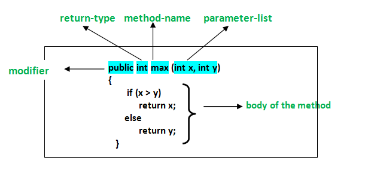
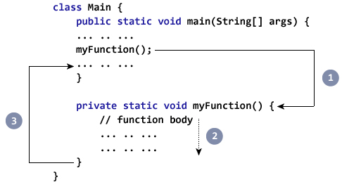

Lekcia 6: Metódy (Funkcie)
Metódy sú pomenované bloky kódu, ktoré vykonávajú konkrétnu úlohu. Namiesto toho, aby ste ten istý kód písali stále dookola, napíšete ho raz do metódy a potom ho už len vyvoláte (zavoláte) podľa mena.
Prečo používame metódy?
- Pohodlnosť: Kód napíšete raz a používate ho kdekoľvek v programe.
- Prehľadnosť: Rozdeľujú dlhý a zložitý program na malé, zrozumiteľné časti.
- Jednoduchá údržba: Ak chcete niečo zmeniť, stačí to opraviť na jednom mieste — v tele metódy.
Anatómia metódy
Každá metóda v Jave má svoj názov, návratový typ (napr. int pre číslo alebo void, ak nič nevracia) a voliteľné parametre v zátvorkách.
Čo si zapamätať?
Metódy sú základom pre čistý kód. Ak vidíte, že kopírujete a vkladáte tie isté riadky kódu viac ako dvakrát, je čas vytvoriť metódu!
Priklady:

